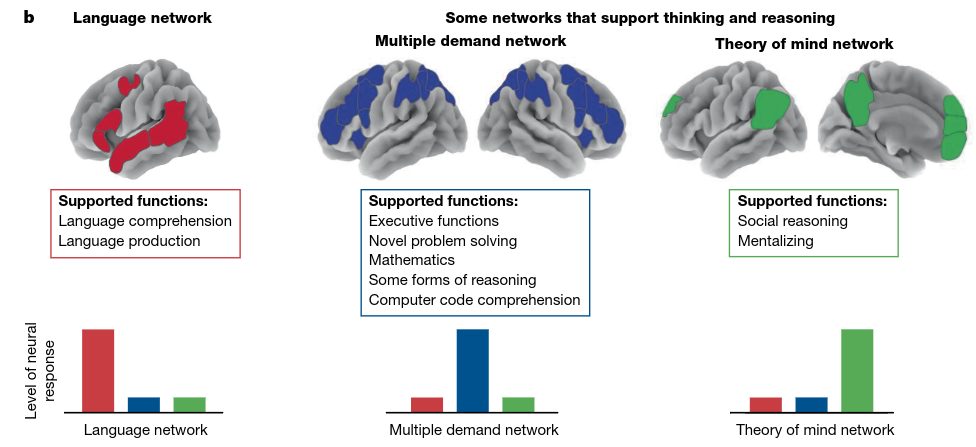
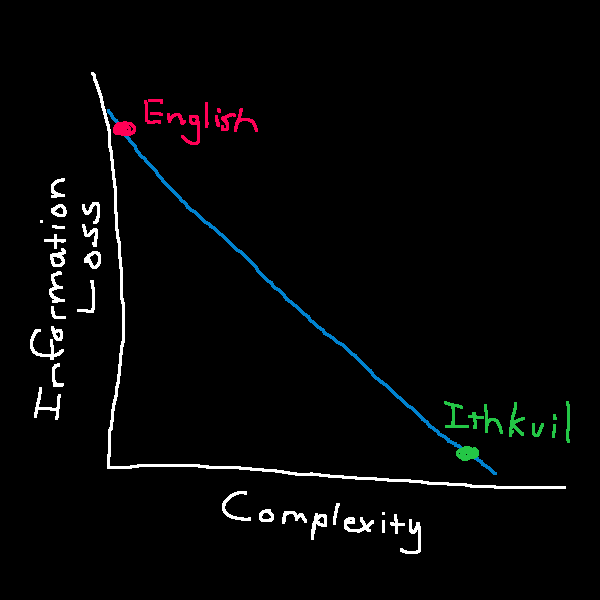
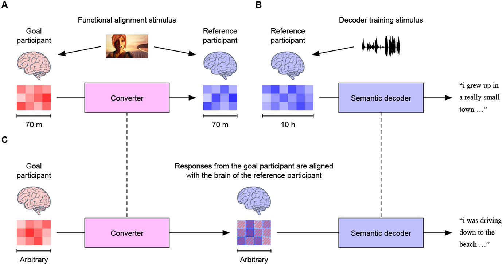

My thoughts outrun my mouth. Not in a fun way. In a “I have a complete model of the thing in my head and the pipe out of my skull runs at maybe 150 words a minute” way. Every time I try to explain something I actually care about, I watch it get flattened on the way out, then watch the person on the other end reconstruct something only somewhat adjacent to it and nod.
Going in, I had a clean theory about why: language is a lossy compression of thought, so build a better one. But this is wrong, in a way that took me a while to see, and the specific shape of the wrongness turned out to be more interesting than the original complaint.
The thing that kicked this off is Fedorenko, Piantadosi & Gibson’s Language is primarily a tool for communication rather than thought1. The claim: the brain’s language network is required to comprehend and produce language, and is not required to reason. Two lines of evidence, and they’re worth stating because the headline sounds like philosophy and it isn’t.
First, people with global aphasia, whose language network is wrecked, can still do arithmetic, play chess, follow causal chains, and pass theory-of-mind tasks. Second, fMRI shows the language network sitting quiet during math, formal logic, and even reading source code. Language is how thought gets in and out. It is not the thinking itself.

The language network and its relationship to other cognitive networks
The thesis of this post:
Language isn’t a lossy compression of thought. It’s a way of causing a related-enough idea to happen inside a head that was built differently from yours, and the vagueness is what makes that possible at all. My actual problem was never precision. It’s rate.
Everything below is me getting from the first sentence to the second.
Leibniz wanted a characteristica universalis, a symbol system where every concept decomposes into primitives, paired with a calculus ratiocinator, a mechanical procedure for reasoning over it2. The pitch is one of the best lines in the history of philosophy: two philosophers in a dispute would stop arguing, pick up their pens, and say calculemus. Let us calculate. Disagreements become arithmetic, errors become visible at a glance.
Every serious attempt since has run the same trajectory:
Notice what actually happened. Formal logic worked, and it’s one of the best things we have. What didn’t work is the part where it swallows meaning. Frege got the calculus and not the characteristic. Every project on this list built something useful and then failed, which is a strong hint that the failure is structural rather than a series of unlucky attempts.
Before the actual argument, the objection everyone raises here, because if I don’t address it a linguist will and they’ll be right to.
Linguistic relativity, the Sapir-Whorf hypothesis8, comes in two strengths. Strong: language determines thought, you cannot think what your language can’t express. Weak: language nudges thought, habitual categories make some distinctions cheaper to notice.
Strong Whorf is dead. It’s been dead for decades. The evidence against it is partly the same evidence from the Fedorenko paper: aphasics who lost language and kept reasoning are a direct refutation of “no language, no thought.” Weak Whorf survives, with real effects in color discrimination and spatial reasoning, and those effects are small and task-specific.
This matters because “build a better language and you’ll think better” is strong Whorf wearing an engineering hat. If I’d noticed that earlier I’d have saved myself a section. The whole conlang-as-cognitive-upgrade pitch inherits a hypothesis the field abandoned. Keep it in your pocket, it’s about to explain Ithkuil.
Here’s the reframe that made it click, and it comes from my own code, so give me one paragraph of programming and then I’ll drop it.
I wrote a library called libpak9 that packs data into a compact binary message so one machine can hand it to another. It works for exactly one reason: both machines were built from the same description of what that message looks like. Same fields, same order, same sizes. Without the shared description the message isn’t degraded, it’s meaningless. The receiver gets a run of bytes and has no way to know which byte was which.
Now the point, and this is the whole post. Two brains have no shared description. Every brain assembles its own private version of every concept out of its developmental history, its sensory quirks, and whatever happened to it at an early age. “Grief” in your head and “grief” in mine are not the same thing stored slightly differently. They are different things that happen to have the same name.
So a word is not a container that meaning travels inside. A word is a label, and the thing hanging off that label is different in every person you say it to. You say grief, and the other person doesn’t receive your version. They go look up theirs and run that. This is why poetry works and why arguments don’t.
For the programmers, the compressed version: the word is the header file, the meaning is the implementation, and everyone links against a different
.so. That’s the whole thing, and it’s where the original title of this post came from. I’m going to stop talking like that now, because the argument doesn’t need it.
Which flips the ambiguity complaint on its head… Language is vague because it has to be. Any system for getting an idea from one head into a differently built head is going to be approximate, because there is nothing shared to be exact about. Strip the vagueness out and you get something that transmits perfectly to exactly one person, which is just… having a thought.
I want to be clear that I did not invent this. Piantadosi, Tily & Gibson made the formal version of the argument in 201210: any efficient communication system will be ambiguous, given that context carries information about meaning. If the listener can figure out what you meant from context for free, then spelling it out is wasted effort. Ambiguity isn’t a defect the system failed to remove, it’s how the system stays cheap.
There’s a Pareto frontier here11 and natural language sits on it. The tradeoff is complexity (how expensive the language is to learn and hold in your head) against informativeness (how precisely its words pin down what you meant). You can move along the curve. You cannot get both for free. And this goes all the way down into grammar: in real languages, words that depend on each other sit measurably closer together than chance would predict, across 37 languages12, because holding a sentence open while you wait for the other half is expensive.

Parteo Curve
“Alfred gave Batman a briefing.” Who’s Alfred, what’s he wearing, was it in person or over comms, briefing on what. Every word drops context you have to reconstruct. And it works fine, because you already know who Alfred is. The sentence isn’t transmitting the scene, it’s naming a scene you can already build. Same reason “can you put the thing away” works. Shared context isn’t a crutch language leans on, it’s the ground language stands on.
If the theory is “our language is too vague, build a sharper one,” Ithkuil is the strongest version of that attempt anyone has actually shipped. It’s explicitly designed for depth, precision, and conciseness, using a matrix of grammatical categories meant to make explicit what natural languages leave implicit1314.
And it is unusable. Not according to me, according to its own author, who says the only part he’s fluent in is the morphology and that he still looks up rules when writing15. That’s the whole result. You can build the more complete language. You cannot pay the cost of learning it. Which is exactly what the Pareto framing predicts: he didn’t beat the frontier, he moved along it, buying precision with complexity until the complexity ate the thing.
David Peterson makes the complementary point in the Conlang Manifesto16: judged on utility, language creation is pointless, and the real case for it is art. Which lands uncomfortably well here. Poetry and literature aren’t decoration bolted onto a communication system. They’re what you do because the system is approximate. You’re not transmitting a meaning, you’re building a stimulus that makes the other person’s own version of things produce something close to yours. A metaphor is a set of words picked so that whatever they already have in their head lands near whatever you have in yours.
The strongest counterexample to the whole “you can’t beat the frontier” claim is notation. Arabic numerals vs Roman numerals is a real representational upgrade that made previously-hard thinking easy, and so is musical notation, and so is Feynman diagrams! Why do those work when Ithkuil doesn’t? Could it be that they are domain-specific and small? They don’t try to cover all of meaning like Ithkuil!
Here’s the thing I had wrong for most of the time I was writing this.
In principle, two people with unlimited patience can converge. You go layer by layer, you check understanding, you build the shared context up from nothing. This is what teaching is. It demonstrably works. It’s just brutally slow (in my experience), and both parties have to want it (which makes a beautiful conversation).
So my complaint was never “language is too vague to hold my thought.” The complaint is “I can get n words a minute out of my mouth and I have a dissertation in my head.” That’s a rate problem, not a precision problem. And that distinction decides which technologies are even relevant.
A brain-computer interface is a faster wire. It doesn’t do anything about the fact that the two ends were built differently. So “download the thought and improve on it instantly” is the same category error as Ithkuil, one layer down. Worth knowing what’s actually real, roughly in order of how well it works.
Solid, unglamorous, real since BrainGate in the 2000s17. Cursor control, robotic arms. It’s tractable because the signal is close to the output: you’re reading an intended movement off motor cortex, and an intended movement is already almost a command.
Also real, and the detail that matters is what they decode. They read the articulatory motor plan, the muscle commands you’d have sent to your vocal tract. That’s downstream of everything interesting. It’s a keyboard made of neurons. Meta’s Brain2Qwerty18 does a non-invasive version for typing, which is impressive engineering but requires you to sit inside a magnetically shielded MEG room.
Tang and Huth’s fMRI decoder19 is the interesting one, and the first thing here that isn’t just reading motor commands. It reconstructs continuous language from the brain’s representation of meaning, gist-level rather than word-for-word, using a language model as a prior over what you plausibly meant. Two details from that work matter more than the headline: it took roughly 16 hours of training data per person, and a decoder trained on one person did not work on anyone else. Train on me, run on you, get nothing.
That second result is my entire argument showing up as an experimental finding. Each brain encodes meaning in its own private way, and a reader built for one brain is useless pointed at another. I’d have stopped there and called it a day. Except they kept going.
Tang and Huth got cross-participant decoding working20. The method: record both brains responding to the same stimuli, including silent movies with no language in them at all, learn the mapping between the two, then run the first person’s decoder on the second.
Read that again, because it isn’t a refutation of the problem, it’s a confirmation with a receipt. Cross-brain decoding became possible only by sitting two people in front of the same things and learning how each one’s private encoding lines up with the other’s. They didn’t skip the shared groundwork. They built it. Which is, notice, language acquisition, automated. You still pay the cost. You just pay it in scanner hours instead of in childhood.

Cross-participant Decoding
Barely a thing. Stimulation gets you crude tactile sensation and phosphenes, dots of light. There is no known operation for “insert proposition,” and it isn’t obvious what that would even mean, since the thought would have to arrive already expressed in whatever private form that particular brain uses. Which is the same wall as before, approached from the other side.
One correction to a thing I believed going in. I started with the Broca’s-does-production / Wernicke’s-does-comprehension model, which is a caricature. Lesion-symptom mapping21 and the modern language network work both make the localization far messier than the textbook picture. Don’t build your mental model of BCI targets on a diagram from 1874.
A mature speech prosthesis that beats spoken word rate is plausible on a normal engineering timeline. It attacks the exact bottleneck I have. It buys me a faster mouth.
It does not buy mutual understanding, and I think I finally see why that isn’t a temporary limitation waiting on electrode count. Consider that with a large language model we have total access: every number inside it, the ability to freeze it, rerun the same input, delete pieces and watch what breaks, and a full record of what it was trained on. And “what does this part of the model actually mean” is still an open research field. That’s the easy version of the problem… the brain version has 86 billion neurons, recordings too noisy to reliably tell which cell fired, no way to rerun yesterday, and no answer key.
And if a faster mouth is all it is, the receiver becomes the bottleneck instantly. There’s no point emitting at 500 words a minute into someone parsing at 150. You’d need the comprehension side too, and now you’re back to lining up two different heads, and the only known way to do that is to point them at the same things for a long time. Which is just… knowing each other for a long time.
The honest first step isn’t neural at all. It’s a translator that works on top of language rather than replacing it: something that knows a specific listener well enough to re-say your idea in the words, structure, and examples that particular person already has. Not a better language. A rewrite of the one we have, per listener. Which, if you want to be depressing about it, is what good teachers and good writers have always done by hand.
Leibniz, Frege, Carnap, Lojban, Ithkuil. Every attempt to build a language that can’t be misunderstood either narrows into formal logic, which works and can’t carry meaning, or buys precision with learning cost until nobody can learn it. That isn’t bad luck, it’s the shape of the problem.
Any efficient communication system will be ambiguous, because context is informative and spelling out what context already supplies is wasted effort. Natural language sits on the Pareto frontier. It is not a bad system, it’s a system solving a harder problem than I gave it credit for.
Given unlimited time, two people can converge on anything. That’s what teaching is. The failure mode I actually hit isn’t “English can’t express this,” it’s “building the shared context is slow and I get impatient.” Different problem, different fix.
It genuinely attacks the rate problem, which is my problem, which is why I still find them interesting. It does not get you understanding. The one result that moved toward cross-brain decoding got there by building shared ground between two people first, which is language acquisition with better instruments.
When I can’t explain something, the failure is almost never that English is too lossy. It’s that I haven’t built enough shared context yet. That’s fixable, the fix is boring, and it doesn’t require drilling a hole in anyone!
Fedorenko, Piantadosi & Gibson, “Language is primarily a tool for communication rather than thought,” Nature 630 (2024) ↩
The genius who attempted to unify all knowledge (@0I00I00I) ↩
Gottlob Frege, Begriffsschrift (1879), English translation ↩
Ludwig Wittgenstein, Tractatus Logico-Philosophicus (1922) ↩
Rudolf Carnap, The Logical Structure of the World, trans. Rolf A. George (1967) ↩
Piantadosi, Tily & Gibson, “The communicative function of ambiguity in language,” Cognition 122(3) (2012) ↩
Futrell, Mahowald & Gibson, “Large-scale evidence of dependency length minimization in 37 languages,” PNAS 112(33) (2015) ↩
What People Get Wrong About Language - The Ithkuil Fallacy ↩
Tang, LeBel, Jain & Huth, “Semantic reconstruction of continuous language from non-invasive brain recordings,” Nature Neuroscience 26 (2023) ↩
Tang & Huth, “Semantic language decoding across participants and stimulus modalities,” Current Biology 35(5) (2025) ↩
Bates et al., “Voxel-based lesion-symptom mapping,” Nature Neuroscience 6 (2003) ↩